Изучение методов кодирования и модуляции сигналов с помощью высокоуровневого языка программирования Octave. Определение спектра и параметров сигнала. Демонстрация принципов модуляции сигнала на примере аналоговой амплитудной модуляции. Исследование свойства самосинхронизации сигнала.
Построить график функции y1 = sin x + (1/3) sin 3x + (1/5) sin 5x на интервале [-10; 10] и добавить график функции y2 = cos x + (1/3) cos 3x + (1/5) cos 5x.
Разработать код для получения графиков меандра с различным количеством гармоник.
Определить спектр двух отдельных сигналов (частоты 10 Гц и 40 Гц) и их суммы.
Продемонстрировать принципы амплитудной модуляции.
Реализовать кодирование сигналов для заданной битовой последовательности методами: униполярный, AMI, NRZ, RZ, манчестерский, дифференциальный манчестерский. Проверить свойство самосинхронизации и построить спектры.
Сигнал — физическая величина, содержащая определённую информацию. Согласно теореме Котельникова (теореме Найквиста-Шеннона), непрерывная функция с ограниченным спектром полностью определяется своими значениями, отсчитанными через интервалы времени Δt = 1/(2F), где F — ширина спектра функции.
Любой периодический сигнал можно разложить в ряд Фурье: f(t) = a0/2 + сумма от k=1 до бесконечности (ak cos(ω0 kt) + bk sin(ω0 kt))
Перед началом работы была выполнена установка пакета Octave в системе
Ubuntu с помощью команды sudo apt install octave. На рис. 1
показан процесс установки.
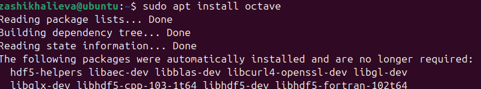
Версия установленного Octave была проверена командой
octave --version. Установлена версия 8.4.0 (рис. 2).
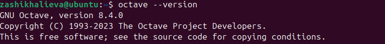
Для работы с сигналами был установлен пакет signal. На
рис. 19 показан список установленных пакетов.
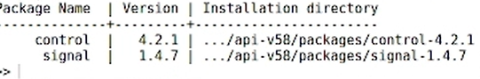
В соответствии с заданием был создан файл plot_sin_cos.m
для построения графиков функций y1 и y2. На рис. 4 представлен график
функции y1 = sin x + (1/3) sin 3x + (1/5) sin 5x.
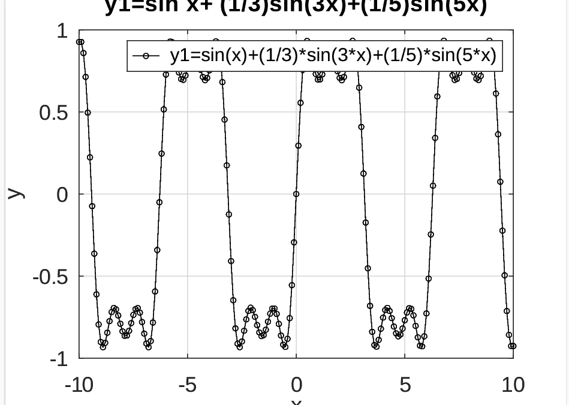
На рис. 5 представлен график функции y2 = cos x + (1/3) cos 3x + (1/5) cos 5x.
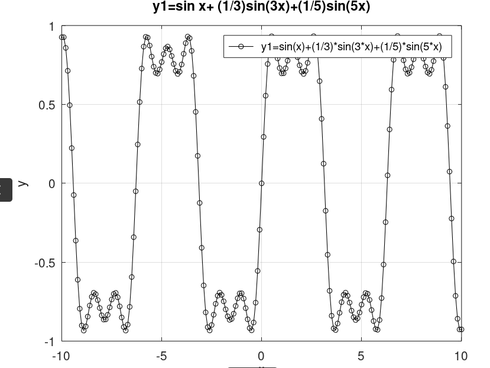
На рис. 6 показаны совмещённые графики обеих функций.
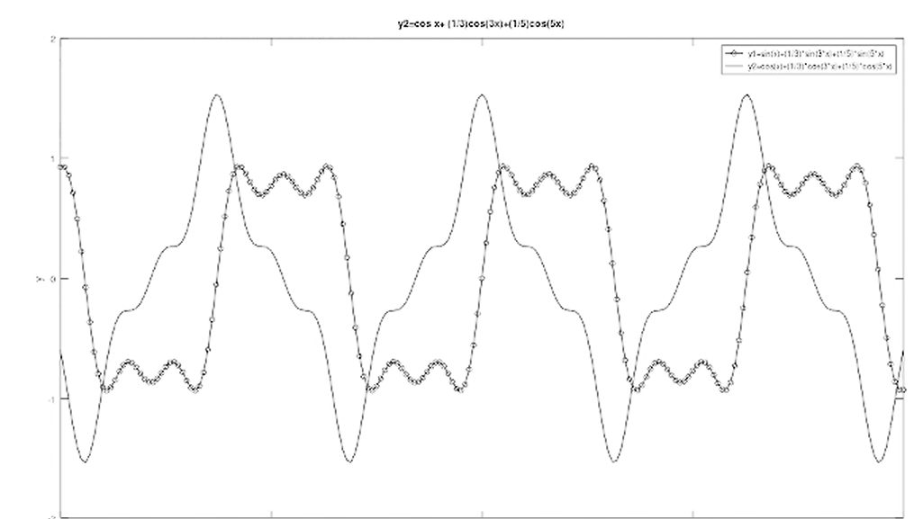
На рис. 7 представлены табличные данные, использованные для построения графиков.
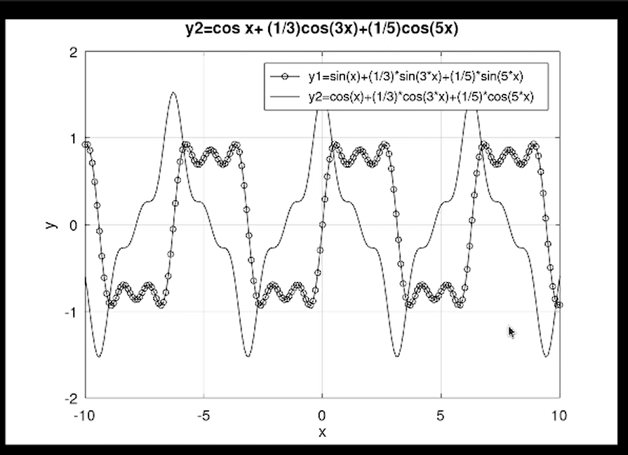
Для разложения импульсного сигнала в форме меандра в частичный ряд
Фурье был создан файл meander.m. Меандр — это сигнал, в
спектре которого присутствуют только нечётные гармоники с амплитудой,
обратно пропорциональной номеру гармоники.
На рис. 26 представлен редактор Octave с открытыми файлами проекта.
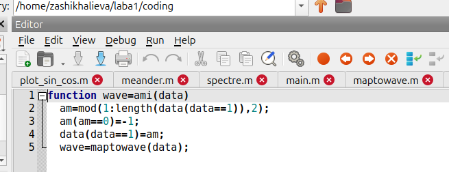
На рис. 9 показаны графики меандра, реализованные с различным количеством гармоник (от 1 до 8).
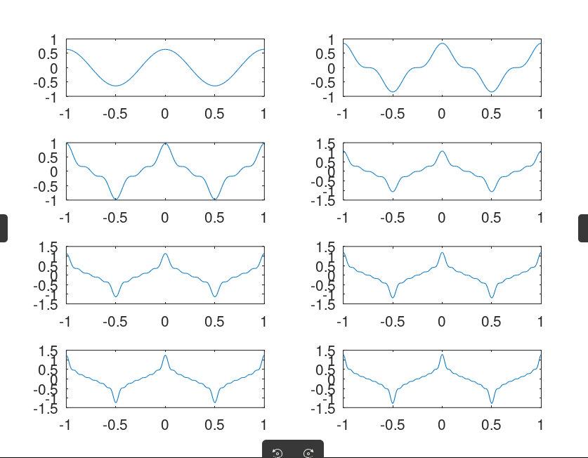
На рис. 10 представлены параметры пиков сигнала.
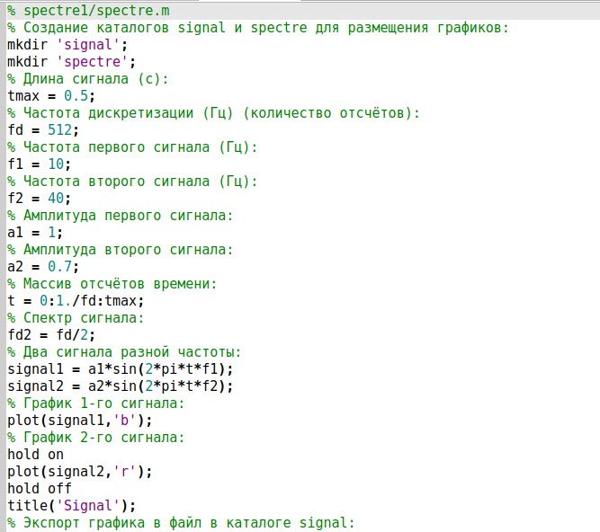
Для анализа спектра сигналов был создан файл spectre.m
(рис. 11). Были сгенерированы два синусоидальных сигнала с частотами 10
Гц и 40 Гц и амплитудами 1 и 0.7 соответственно.
Листинг кода для построения сигналов: ```octave % Длина сигнала (с) tmax = 0.5; % Частота дискретизации (Гц) fd = 512; % Частоты сигналов f1 = 10; f2 = 40; % Амплитуды a1 = 1; a2 = 0.7; % Массив отсчётов времени t = 0:1./fd:tmax; % Сигналы signal1 = a1sin(2pitf1); signal2 = a2sin(2pitf2);
На рис. 12 представлен график двух синусоидальных сигналов разной частоты.
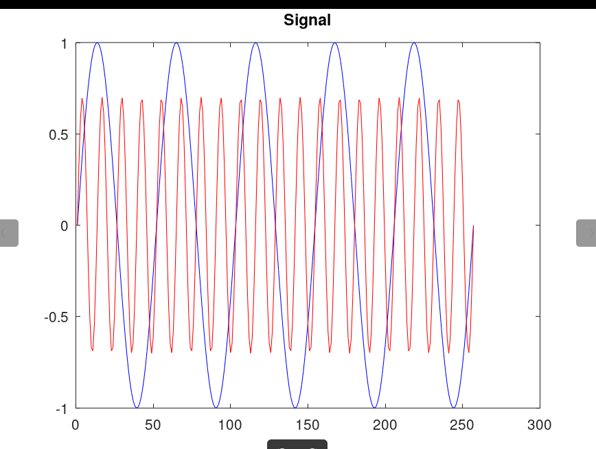
С помощью быстрого преобразования Фурье (БПФ) были найдены спектры сигналов. На рис. 13 показан некорректированный график спектров.
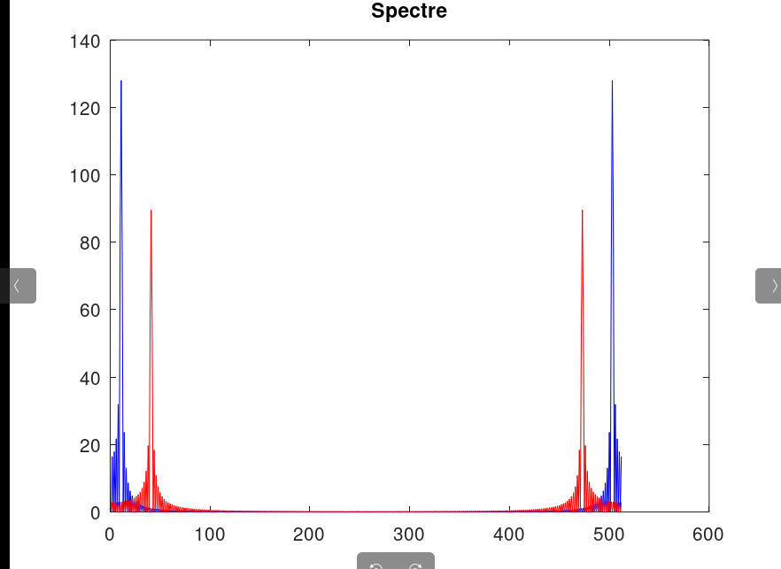
После корректировки (отбрасывание отрицательных частот и нормировка по амплитуде) был получен исправленный график спектров (рис. 14).
На рис. 16 и 18 представлены спектры суммы рассмотренных сигналов.
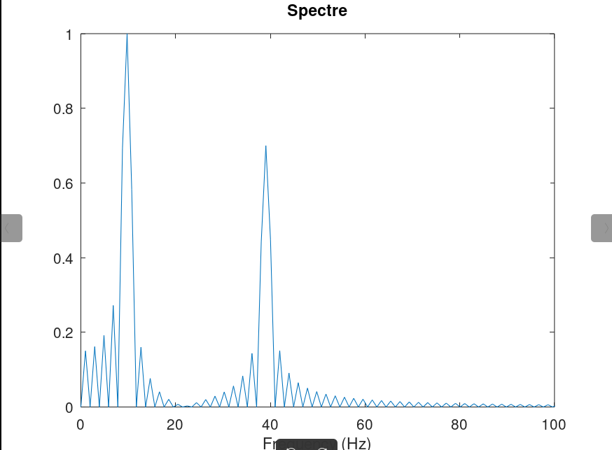
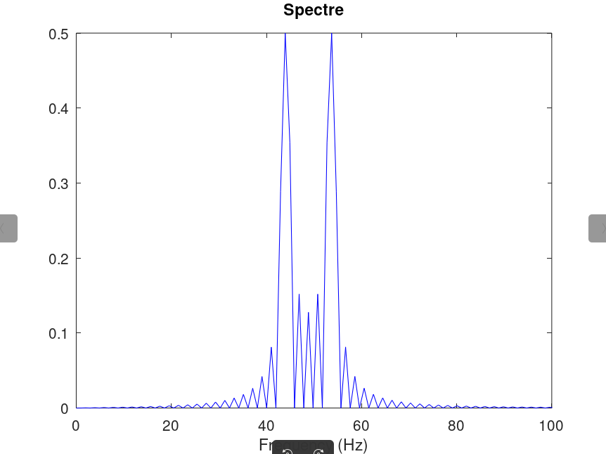
Для демонстрации принципов амплитудной модуляции был создан файл
am.m. Модуляция выполнялась путём перемножения
низкочастотного сигнала (5 Гц) и высокочастотной несущей (50 Гц).
На рис. 15 представлен результат модуляции: синим цветом показан модулированный сигнал, красным — огибающая.
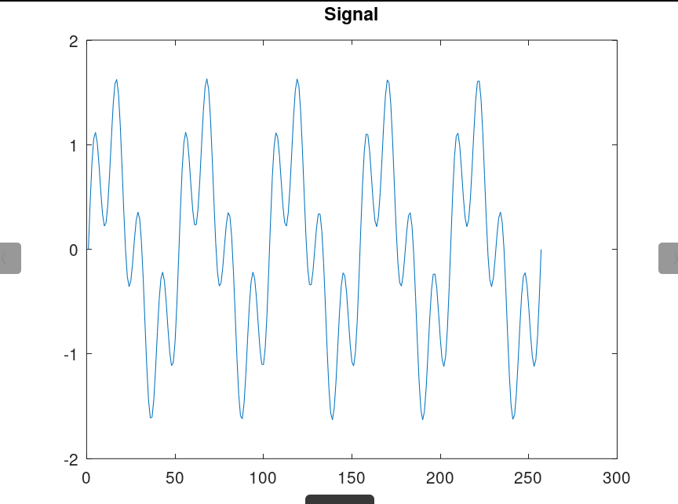
Для кодирования сигнала были созданы следующие файлы-функции (рис. 20, 22-23, 26-30):
unipolar.m — униполярное кодированиеami.m — AMI-кодированиеbipolarnrz.m — NRZ-кодированиеbipolarrz.m — RZ-кодированиеmanchester.m — манчестерское кодированиеdiffmanc.m — дифференциальное манчестерское
кодирование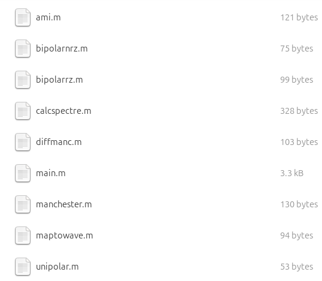
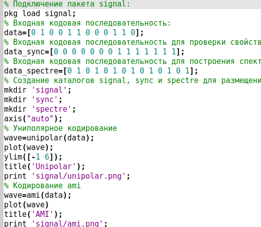
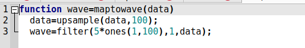
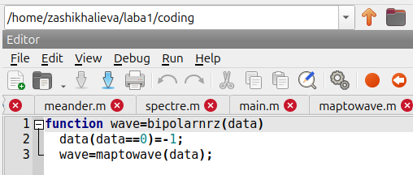
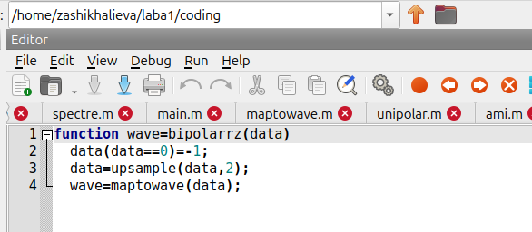
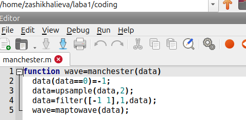
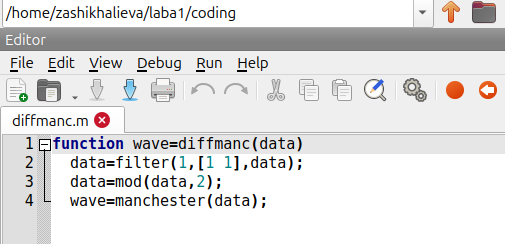
Функция maptowave.m выполняет преобразование дискретной
последовательности в непрерывный сигнал с помощью повышающей
дискретизации (upsample) и фильтрации.
В основном файле main.m были заданы три входные
последовательности: - data = [0 1 0 0 1 1 0 0 0 1 1 0] —
для построения основных графиков; - data_sync — для
проверки свойства самосинхронизации; - data_spectre — для
построения спектров.
На рис. 32 представлены результаты кодирования для последовательности
data:

Для проверки самосинхронизации использовалась последовательность с длинной серией одинаковых битов. На рис. 33 представлены результаты:
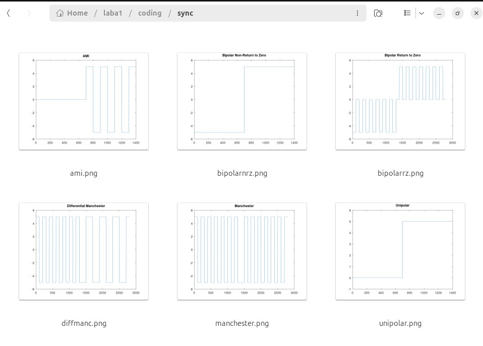
На рис. 34 представлены спектры всех реализованных кодов:

В таблице 1 представлены результаты проверки свойства самосинхронизации для каждого метода кодирования.
| Метод кодирования | Самосинхронизация |
|---|---|
| Униполярный | Нет |
| AMI | Да (при наличии сигнала) |
| NRZ | Нет |
| RZ | Да |
| Манчестерский | Да |
| Дифференциальный манчестерский | Да |
В ходе выполнения лабораторной работы были достигнуты следующие результаты:
Установлен и настроен Octave с пакетом signal для обработки сигналов.
Построены графики функций y1 = sin x + (1/3) sin 3x + (1/5) sin 5x и y2 = cos x + (1/3) cos 3x + (1/5) cos 5x.
Выполнено разложение меандра в ряд Фурье. Установлено, что увеличение количества гармоник приводит к более точному приближению к идеальной форме сигнала.
Проведён спектральный анализ сигналов с помощью быстрого преобразования Фурье. Показано, что частота дискретизации должна быть не менее удвоенной максимальной частоты сигнала (теорема Котельникова).
Продемонстрирован принцип амплитудной модуляции, при котором низкочастотный информационный сигнал переносится на высокочастотную несущую.
Реализованы шесть методов линейного кодирования:
Построены спектры всех реализованных кодов, что позволило оценить их частотные характеристики.
Таким образом, все поставленные задачи выполнены в полном объёме.